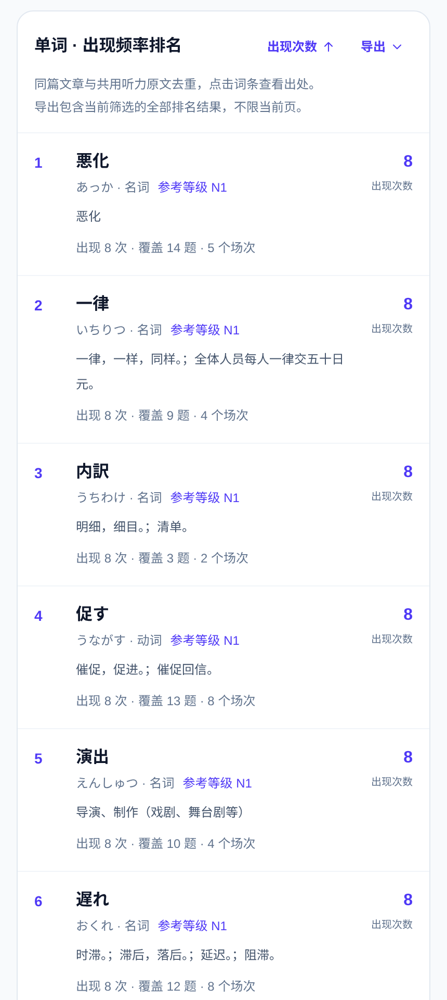
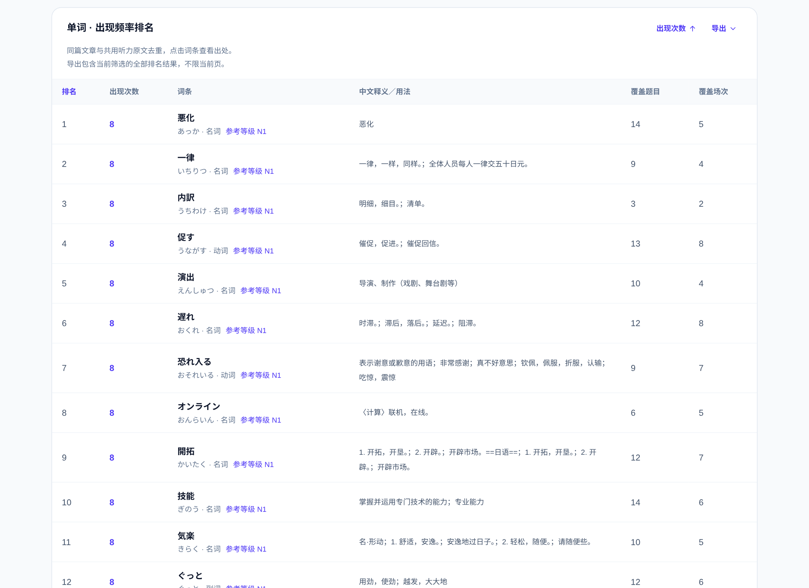
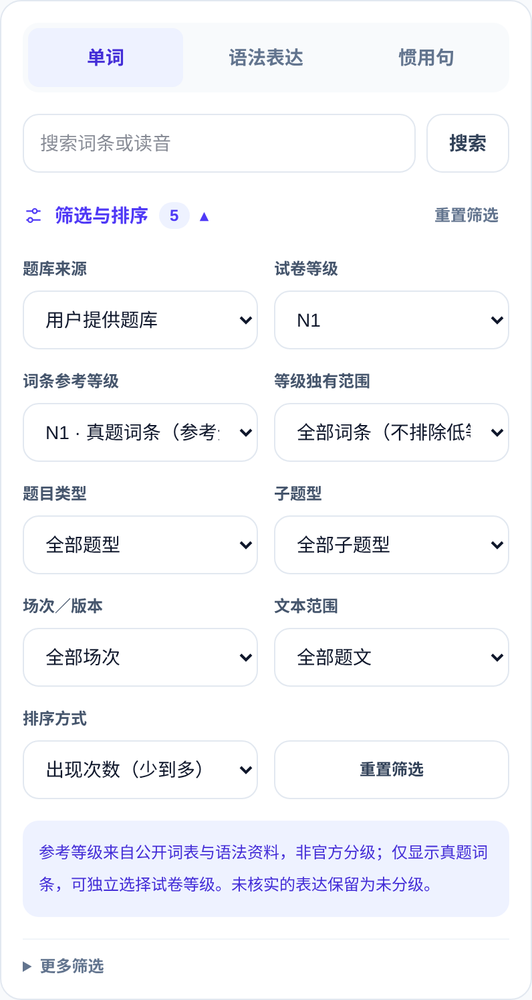
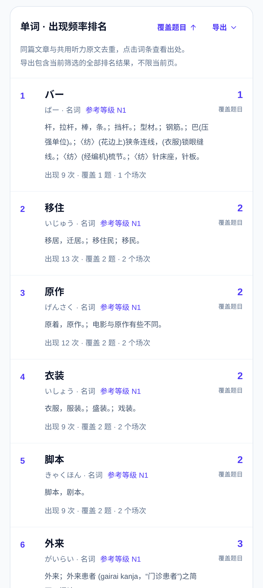
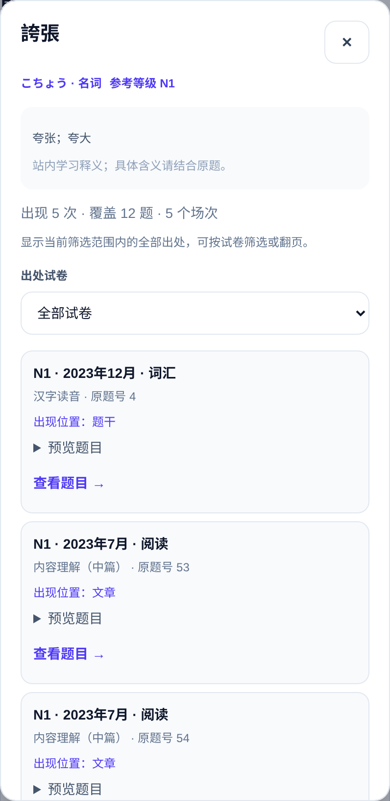
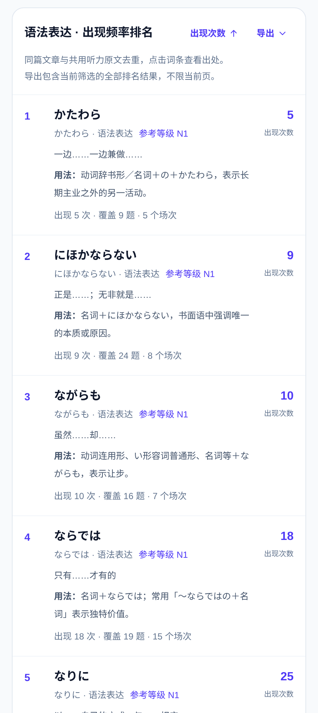
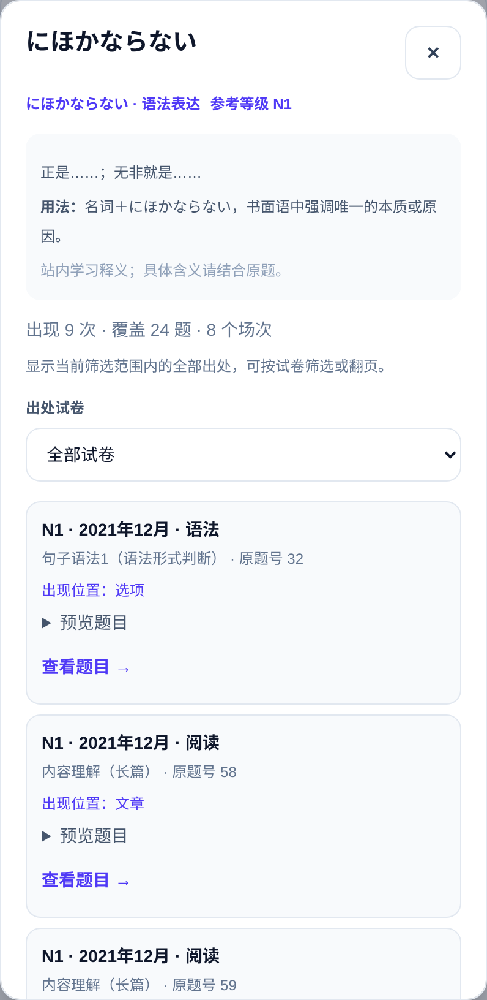
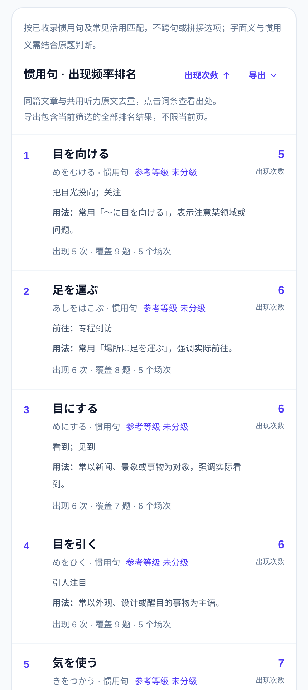
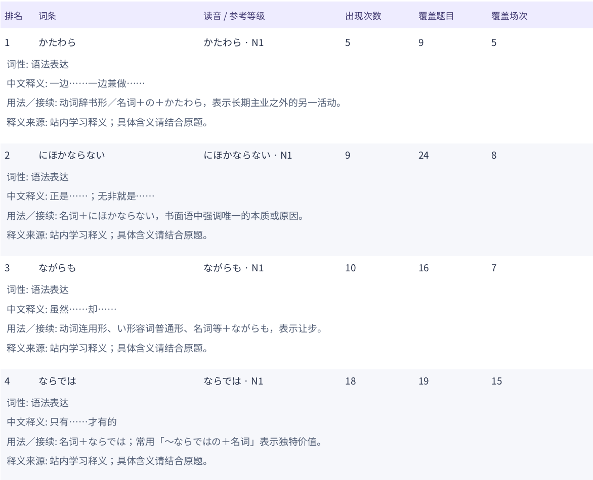
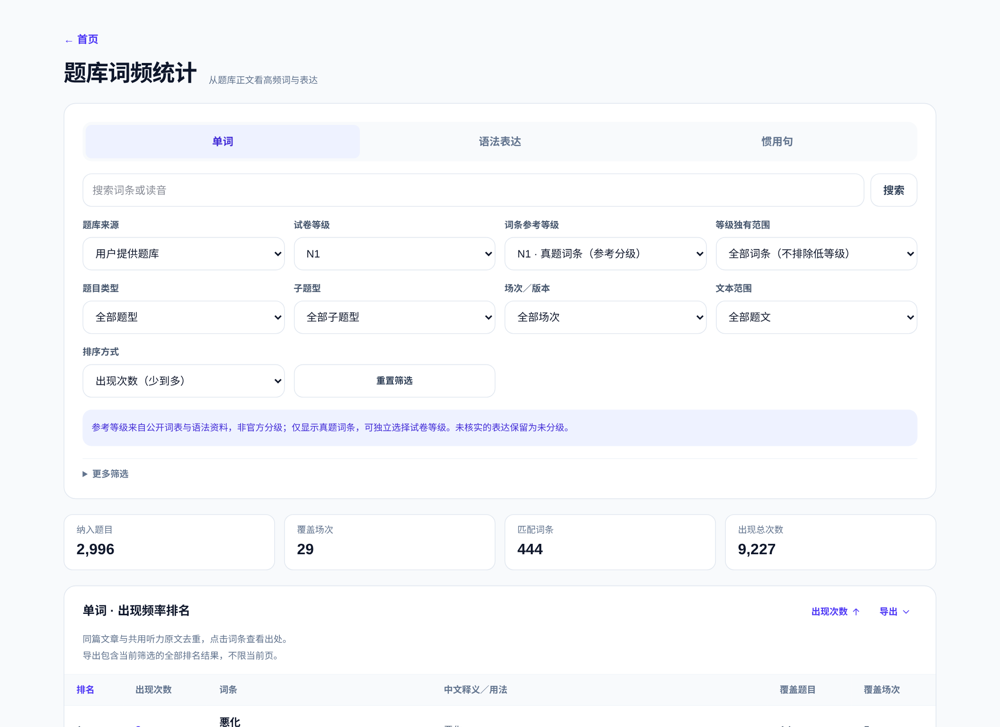

JLPT｜真题词汇 × 语法
自己开发的复习工具
自己做了个 JLPT
真题词汇／语法检索站。
查 N1 词汇、看参考语法，还能回到原题。
能筛选能溯源能导出
界面简洁，查词顺手。
复习内容，自己来选。
给打工人／学生党的备考工具，
把查词、整理、复习放在一起。
本套以 N1 参考分类为例。


查 N1 词汇、看参考语法，还能回到原题。
界面简洁，查词顺手。
复习内容，自己来选。
给打工人／学生党的备考工具，
把查词、整理、复习放在一起。
本套以 N1 参考分类为例。

中文释义、参考等级、出现记录，放在一起看。

按目标组合条件，少一点重复翻找。
选目标等级、具体题型，
再限定想看的年月场次。
动词、名词、接续词……
也能限定文章、题干、选项。
不只按试卷等级统计，
还可以筛 N1 参考词汇。

出现次数、覆盖题目、覆盖场次，都能排序。
词条在当前筛选题文中，
出现了多少次。
想看覆盖多少道题、多少场？
切换指标就能排列。
想先看高频词，
还是从少见词开始查？

示例：N1 参考词汇「誇張」的详情页面。
查意思，也看参考等级，
不用在多个页面来回切。
能看到它出现过的卷子，
以及对应的题型和题号。
点一下查看原题，
把词放回真实的上下文。

切换到语法分类，再按参考等级筛选。
不和普通单词混在一起，
集中整理想复习的表达。
「かたわら」5 次，
「にほかならない」9 次。
看懂大意，再核对接续，
也能继续追溯原题。

点开表达，查看中文含义、用法和原题出处。
「にほかならない」
正是……；无非就是……
名词＋にほかならない，
结合说明理解使用方式。
看看它在真题中怎么出现，
把表达和语境一起记。

不只记单词，把常见的整条表达放在一起看。
例如「目を向ける」
「足を運ぶ」「目を通す」。
含义、搭配与用法，
放在一起更容易理解。
看看它在哪些题目中出现，
整理成自己的复习清单。

筛好范围再导出，就是自己的复习清单。

界面简洁，功能围绕筛选、溯源和导出。
